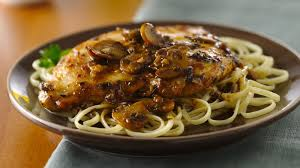

Chicken Marsala

A classic Italian dish that is a staple in restaurants the world over. While the common preparation is usually a cream-based
sauce, I am opting for a more traditional approach. Laid over a bed of buccatini and paired with a crusty slice
of bread, this rustic dish will be sure to please.
Ingredients
- 4 chicken breasts
- salt and pepper
- 1/2 cup flour
- 2 tbsp olive oil
- 3 small shallots, chopped
- 1 cup chestnut mushrooms, sliced
- 1 tbsp flour
- 1/2 cup marsala wine
- 1 cup chicken stock
- flat leaf parsley
Steps
- Cover the chicken breasts with a cling wrap and pound them with a meat mallet until they are no thicker than ½ inch. Sprinkle with salt and pepper on both sides and dredge in flour.
- Fry in olive oil until golden over medium-high heat for approximately 5 minutes. Do not over cook as the chicken breasts will be quite thin and will cook fast.
- Remove to a separate plate and set aside.
- To the same pan add chopped shallots and cook over low heat for 2-3 minutes, then add the sliced mushrooms, salt and pepper and saute for 5 minutes.
- Add 1 tbsp of flour, stir and cook for a minute longer, then add marsala wine and turn the heat up to medium.
- Add chicken stock and bring to a boil, then reduce the heat to a gentle simmer and return the chicken to the pan.
- Let it heat through in the sauce, simmer for a few minutes to allow the sauce to thicken to a desired consistency.
- Serve sprinkled with chopped parsley and a side dish of your choice.